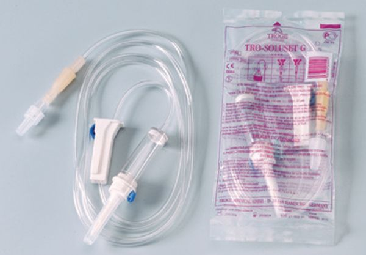

Photo gallery
2021.04.18 14:11





- UNIVERSITY STUDENTS SYSTEM
Στην Eurodiet®, εξασφαλίζεις ιατρική παρακολούθηση, τρως γλυκά από την πρώτη μέρα, δεν μετράς, δεν ζυγίζεις, ενώ απολαμβάνεις μία γευστική δίαιτα. - Home [www.caremarket.gr]
Αυτά είναι τα τρόφιμα πλούσια σε bιταμίνη d, γνωστή και ως η «βιταμίνη του ήλιου» που είναι σημαντικό να εντάξεις στη διατροφή σου. - Flexstores | Συμπληρώματα Διατροφής - Αθλητική διατροφή
Σημαντική ανακοίνωση Ανακοινώνεται ότι για την καλύτερη εξυπηρέτηση των φοιτητών και για να μην εμφανίζονται προβλήματα παραλαβής των ηλεκτρονικών δηλώσεων μαθημάτων των φοιτητών από τις γραμματείες, πρέπει να ... - Διατροφή στην αρχαία Ελλάδα - Βικιπαίδεια
Το Caremarket έδωσε τη θέση του στο eMarket ΣΚΛΑΒΕΝΙΤΗΣ!. Εάν είστε εγγεγραμμένος Πελάτης δεν χρειάζεται να δημιουργήσετε νέο λογαριασμό. - ionio.gr
We would like to show you a description here but the site won’t allow us. - Εγκεφαλικό Επεισόδιο: Η διατροφή που μειώνει κατά 10% τον ...
Διατροφή των αρρώστων Οι αρχαίοι Έλληνες ιατροί συμφωνούν για την αναγκαιότητα ιδιαίτερης διατροφής για τους αρρώστους, εντούτοις οι απόψεις τους για το ποια τρόφιμα πρέπει να ... - Δίαιτα - Διατροφή με Ιατρική Παρακολούθηση | Eurodiet
Ηλεκτρονικό κατάστημα με συμπληρώματα διατροφής και bodybuilding κορυφαίας ποιότητας. Ασυναγώνιστες τιμές και τεράστια ποικιλία σε πρωτεΐνες, αμινοξέα, βιταμίνες, λιποδιαλύτες. Yamamoto Point Greece. - To Mediterranean College ανοίγει τον φάκελο «Διατροφή ...
Η διαδικτυακή σας ενημέρωση για θέματα διατροφής, δίαιτας, fitness και το πλησιέστερο σε εσάς διαιτολογικό γραφείο. - Όσα ψάχνεις για διατροφή και δίαιτα | medΝutrition
Φροντίστε ώστε η διατροφή σας να είναι πλούσια σε πρωτεΐνες υψηλής βιολογικής αξίας, οι οποίες ενισχύουν τη μυϊκή μάζα και το μεταβολισμό σας. Για το λόγο αυτό καλό είναι εστιάζετε στο ... - Τροφές πλούσιες σε Βιταμίνη D που πρέπει να εντάξετε στη ...
Τη διατροφή που μπορεί να μειώσει τον κίνδυνο εγκεφαλικού επεισοδίου αποκαλύπτουν οι ερευνητές επισημαίνοντας παράλληλα τις παγίδες που πρέπει να αποφύγουμε για το καλό του... κεφαλιού μας